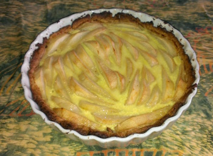

Pear cream tart recipe

Prep Time: 30 minutes - Cook Time: 40 minutes - Servings: 6
Ingredients:
- 4 pears
- pie crust (make it or buy it)
- 1 egg yolk
- 15 cl of heavy whip cream
- vanilla extract
- a pinch of salt
Instructions:
- Pre-heat oven at 375°F
- Spread pie crust on dish and make holes with a fork
- Put in oven for 10 minutes
- Place pears
- Cook for 25 min
- Add cream (egg yolk + whip cream + vanilla + pinch of salt)
- Put back in oven and turn off oven. Let cook for 5 minutes while oven is cooling down
Notes: great w/ Vanilla ice cream.